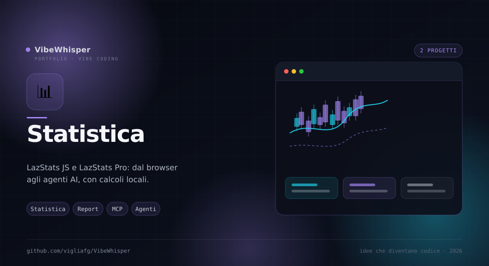

Statistica
Due generazioni di analisi statistica locale: LazStats JS nel browser e LazStats Pro su desktop, CLI e agenti AI. Stesso metodo: calcoli espliciti, dati che restano tuoi e limiti dichiarati.
Dal browser agli agenti
LazStats JS ha portato l'analisi inferenziale nel browser. LazStats Pro ne fa un workbench completo per desktop, riga di comando e agenti AI, senza rinunciare al local-first.
LazStats Pro
Desktop · CLI · MCP · v0.35.0
L'evoluzione di LazStats JS: workbench desktop, oltre 70 procedure, report e grafici esportabili, import SPSS/Stata, sei lingue, CLI lazstats e server MCP con 8 tool. Dalla 0.35.0 l'analisi statistica è richiamabile da agenti AI.
Prima nel browser, poi ovunque
LazStats JS resta il modo più rapido per esplorare un dataset senza installare nulla. LazStats Pro aggiunge la profondità del desktop e la possibilità di far pilotare le analisi a un agente.
- LazStats JS — Sei famiglie di test, spreadsheet editor e diagnostica visuale, tutto nel browser e senza backend.
- LazStats Pro — Oltre 70 procedure, dataset più grandi, report HTML/Word/XLSX, grafici editabili e progetti
.lzs. - CLI
lazstats— Analisi riproducibili da terminale, batch, envelope JSON e rendering dei risultati. - Server MCP — Otto tool per scoprire procedure, ispezionare dati, eseguire analisi e recuperare risultati da un host agentico.
- Stesso confine — Dati locali, calcoli espliciti e nessun invio a servizi esterni: l'agente legge solo la directory che gli viene concessa.